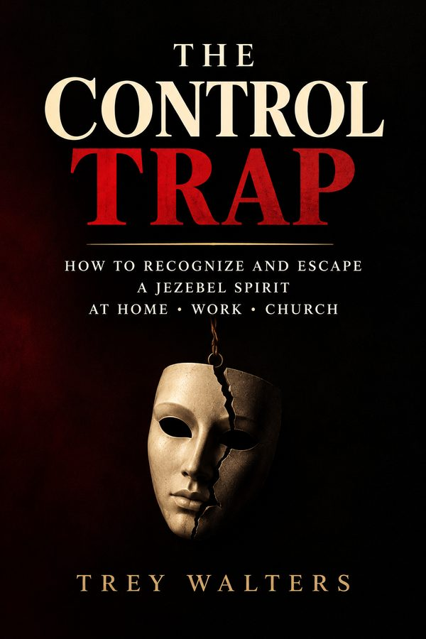
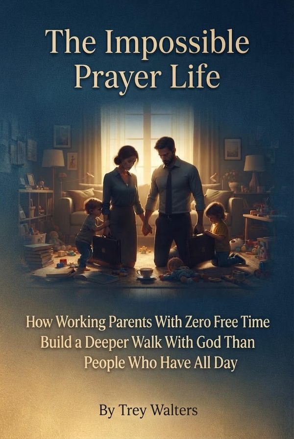

Bestselling Author • Mentor • Speaker
Heal Your Heart. Break Free From Lust. Build a Life and Love That Last.
Faith-based books, mentorship and coaching for Christians ready to recover from heartbreak, walk in purity, and finally get unstuck.
You don't have to stay stuck in what broke you, or in what keeps pulling you back.
Whether you're rebuilding after betrayal, fighting a private battle with lust, or ready to grow into who God called you to be, you'll find practical, proven steps here.
Books & Resources
Practical, faith-based help to break free and rebuild.
Coaching session
First Author in the Family: Finish Your Book in 6 Months
6-month 1-on-1 coaching for Christians who feel called to write a book but keep starting and never finishing. Weekly calls, a clear plan, daily…
6 monthly payments of $300

Coaching session
Get Unstuck: 1-on-1 Mentorship for Christians Who Know They Are Meant for More
Weekly 1-on-1 mentorship for Christians who feel stuck and unsure of their next step. We find what is holding you back, build daily habits that…
$250/mo
Download
Kingdom Income + Free Quick-Start Action Guide
Working hard, tithing faithfully, doing everything "right" — and still drowning in bills? You're not lacking effort. You're missing God's…
$27.99
Download
The Value of a Woman: Discovering Her Worth, Reclaiming Her Identity
The enemy hides a woman's worth before he steals her identity. From Eve in the garden to today's confusion over identity, this book exposes that…
$25
Bundle
The Freedom Bundle: Break Free From Lust, Porn And Spiritual Attacks In Your Dreams
Break the habit, expose the root and pray it out of your life. Overcoming Sexual Sin gives you proven steps to break porn, masturbation and sexual…
$19.99

Download
OVERCOMING SEXUAL SIN
Trapped in cycles you never expected? Behind closed doors, many silently wrestle with lust, pornography, temptation, shame, and hidden battles…
$15.99

Download
THE CONTROL TRAP: How To Recognize And Escape A Jezebel Spirit At Home-Work-Church
Trapped in a relationship, job, or church where you're constantly blamed, isolated, and worn down? The Control Trap exposes the Jezebel spirit…
$15.99
Download
Water Spirits: The Hidden Force Behind Sexual Immorality
Ever had a dream you couldn't explain? What if it wasn't random, but a spirit trying to claim you? Water Spirits exposes the ancient force behind…
$9.99

Download
The impossible prayer life
You're exhausted, working long shifts, raising kids, and there's no time left for prayer. The Impossible Prayer Life shows working parents how to…
$9.99
Download
Anger Is Costing You More Than You Think MASTER YOUR EMOTIONS, AND TAKE BACK CONTROL OF YOUR LIFE
Stop letting your emotions control you, and stop letting anyone stand in the way of your next level.
Free email delivery
Download
Identifying Red Flags In Dating
Dating can be exciting, but attraction can make us overlook warning signs. This quick-read eBook helps you identify red flags before you become…
Free
Download
Free Chapter: How Porn Starts And The Lies That Keep You Trapped
Why do you keep going back, even when you want to stop? Chapter 1 of Overcoming Sexual Sin exposes how the cycle of porn and lust really starts,…
Free email delivery
About Trey Walters
Bestselling Author
Trey Walters is an international bestselling author, mentor, and speaker known for helping individuals navigate life after betrayal, loss, and major transitions.
His message is centered on restoration, resilience, and rebuilding with purpose.
Highlights:
✔ International bestselling author
✔ Founder of the Tarry With Me Mentorship Organization
✔ Featured guest on multiple media platforms
✔ Passionate about helping people transform pain into growth
Featured On
Trey Walters has been featured on platforms including:
Sheena Power Talk
The Dayelight Show
Wise Worthy Woman (Best 100FM)
Geared To Live Talk Show
The Prophets Marketplace Podcast
The Book That Started It All
How I Lost My Wife to a Warlock
A powerful and transparent story of betrayal, recovery, and choosing to rebuild stronger than before.
This book is for anyone who has faced heartbreak, confusion, or life disruption, and needs a path forward. Available now on Amazon.
Ways to Work With Trey
Mentorship & Coaching
Personal support to help you rebuild your life with clarity and confidence.
Speaking Engagements
Dynamic and impactful speaking for churches, conferences, podcasts, and leadership events.
Author & Community Support
Teaching, encouragement, and resources for those walking through life transitions.
Well-Known Guest Speaker
Trey Walters brings authenticity, wisdom, and real-life experience to every platform he steps into.
From talk shows to leadership spaces, his voice is committed to helping people rise again.
Eye Opening Book
"This book has it all, knowledge, eye opening moments, life lessons and so much more. Would 100% recommend both men and women give it a read."
"Less than a year ago, I was timid. I didn't know my purpose and felt lost, and unsure. It was Tarry with Me Mentorship program that changed everything for me. My mentor, Trey Walters, played a pivotal role in my transformation."
Join My Email List
Get weekly encouragement, mentorship insights, and updates on new releases, speaking events, and resources.
Ready to Take the Next Step?
If you’ve experienced heartbreak, betrayal, or a major life transition, your story isn’t over.
You can rebuild. You can heal. You can rise again.
📘 Read the Book
🤝 Join Mentorship
🎤 Book Trey to Speak